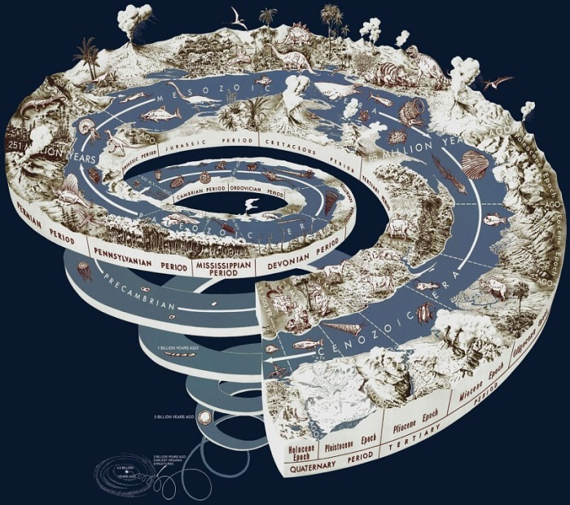

Бог Крон - отец бога Зевса
Вначале существовал лишь вечный, безграничный, темный Хаос. В нем заключался источник жизни мира. Все возникло из безграничного Хаоса - весь мир и бессмертные боги.
Из Хаоса произошла и богиня Земля - Гея. Широко раскинулась она, могучая, дающая жизнь всему, что живет и растет на ней.
Далеко же под Землей, так далеко, как далеко от нас необъятное, светлое небо, в неизмеримой глубине родился мрачный Тартар - ужасная бездна, полная вечной тьмы.
Из Хаоса, источника жизни, родилась и могучая сила, все оживляющая Любовь - Эрос. Начал создаваться мир.
Безграничный Хаос породил Вечный Мрак - Эреб и темную Ночь - Нюкту. А от Ночи и Мрака произошли вечный Свет - Эфир и радостный светлый День - Гемера.
Свет разлился по миру, и стали сменять друг друга ночь и день.
Могучая, благодатная Земля породила беспредельное голубое Небо - Урана, и раскинулось Небо над Землей. Гордо поднялись к нему высокие Горы, рожденные Землей, и широко разлилось вечно шумящее Море.
Матерью-Землей рождены Небо, Горы и Море, и нет у них отца.
Уран-Небо - воцарился в мире. Он взял себе в жены благодатную Землю. Шесть сыновей и шесть дочерей - могучих, грозных титанов - было у Урана и Геи. Их сын, титан Океан, обтекающий, подобно безбрежной реке, всю землю, и богиня Фетида породили на свет все реки, которые катят свои волны к морю, и морских богинь - океанид. Титан же Гипперион и Тейя дали миру детей: Солнце - Гелиоса, Луну - Селену и румяную Зарю - розоперстую Эос. От Астрея и Эос произошли все звезды, которые горят на темном ночном небе, и все ветры: бурный северный ветер Борей, восточный Эвр, влажный южный Нот и западный ласковый ветер Зефир, несущий обильные дождем тучи.
Кроме титанов, породила могучая Земля трех великанов-циклопов с одним глазом во лбу - Арта, Бронта и Стеропа, и трех громадных, как горы, пятидесятиголовых великанов - сторуких (гекатонхейров), названных так потому, что сто рук было у каждого из них - Котта, Гиеса и Бриарея. Против их ужасной силы ничто не может устоять, их стихийная сила не знает предела.
Возненавидел Уран своих детей-великанов, в недра богини Земли заключил он их в глубоком мраке и не позволил им выходить на свет. Страдала мать их Земля. Ее давило это страшное бремя, заключенное в ее недрах. Вызвала она детей своих, титанов, и убеждала их восстать против отца Урана, но они боялись поднять руки на отца. Только младший из них, коварный Крон, хитростью низверг своего отца, оскопил его и отнял у него власть.
Богиня Ночь родила в наказание Крону целый сонм ужасных существ: Таната - смерть, Эриду - раздор, Апату - обман, Кер - уничтожение, Гипнос - сон с роем мрачных, тяжелых видений, не знающую пощады Немесиду - отмщение за преступления - и много других. Ужас, раздоры, обман, борьбу и несчастье внесли эти боги в мир, где воцарился на троне своего отца титан Крон.
От союза Урана и Гайи произошло шесть титанов, которые породили воды земли, ветры, солнце, зарю и луну: «Их сын, титан Океан, обтекающий, подобно безбрежной реке, всю землю, и богиня Фетида породили на свет все реки, которые катят свои волны к морю, и морских богинь океанид. Титан же Гипперион и Тейя дали миру детей: Солнце — Гелиоса, Луну — Селену и румяную Зарю — розоперстую Эос (Аврора). От Астрея и Эос произошли все звёзды, которые горят на тёмном ночном небе, и все ветры: бурный северный ветер Борей, восточный Эвр, влажный южный Нот и западный ласковый ветер Зефир, несущий обильные дождём тучи».
Детьми Гайи стали также гигантские циклопы и многоглавые сторукие великаны, гекатонхейры. Уран возненавидел великанов и заключил свои ужасные творения в недра матери, Земли. Тяжкое бремя давило Гайю, призвала она титанов восстать против Отца-Неба. Покорные воле Урана титаны не осмелились восстать против него. Только один, самый младший, Крон (Сатурн) хитростью победил своего создателя и занял его место: «Упали капли крови Урана на землю, а из них народились неутомимые богини мщения Эринии (Фурии) и змееногие великаны-гиганты». Богиня Ночь (Нюкта), под чьим покровом совершилось злодеяние, родила Крону ужасных божеств: Танату — смерть, Гипнос — мучительный сон, Эриду — раздор, Апату — обман, Керу — уничтожение и Немезиду — отмщение. С тех пор в мире появились ужас, раздор, борьба и обман.